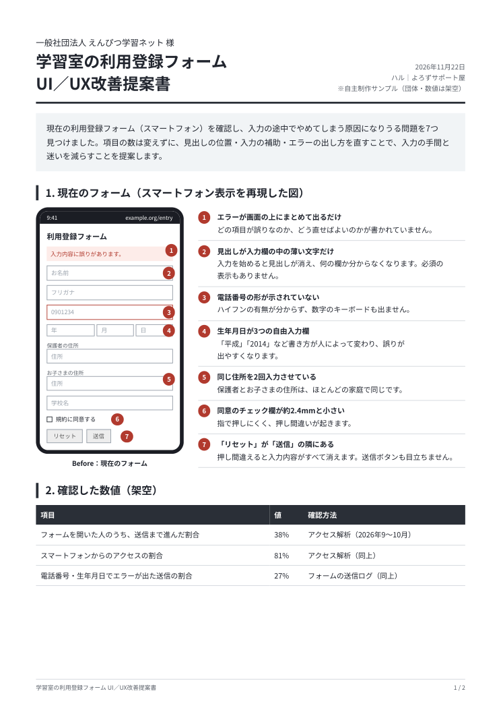
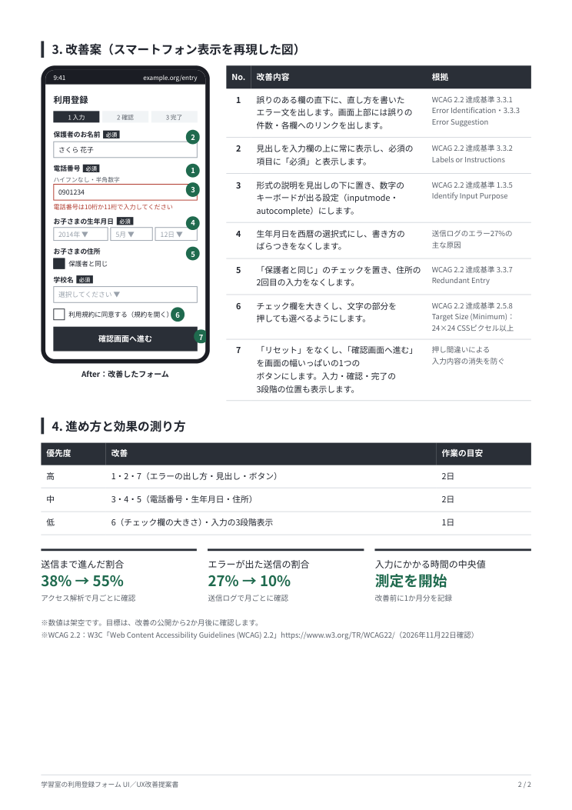

← ポートフォリオ索引
UI/UX PROPOSAL｜A4・2ページ
申込フォームのUI／UX改善提案書
一般社団法人 えんぴつ学習ネット 様の学習室の利用登録フォームを題材に、現在の画面の問題7件と改善案をまとめた提案書です項目の数は変えずに、見出しの位置・入力の補助・エラーの出し方を直す提案です
改善提案書のPDFを開くuiux-proposal.pdf（A4・2ページ）38%
フォームを開いた人のうち、送信まで進んだ割合
アクセス解析（2026年9〜10月）
81%
スマートフォンからのアクセスの割合
アクセス解析（同上）
27%
電話番号・生年月日でエラーが出た送信の割合
フォームの送信ログ（同上）
※団体・数値はすべて架空です。
提案書の2ページを、BeforeとAfterで対置しています


問題7件と、改善の対応
| No. | 問題 → 改善 | 根拠 |
|---|---|---|
| 1 | エラーが画面の上にまとめて出るだけです誤りのある欄の直下に直し方を書いたエラー文を出し、上部には件数と各欄へのリンクを出します | WCAG 2.2 3.3.1・3.3.3 |
| 2 | 見出しが入力欄の中の薄い文字だけです見出しを入力欄の上に常に表示し、必須の項目に「必須」と表示します | WCAG 2.2 3.3.2 |
| 3 | 電話番号の形が示されていません形式の説明を見出しの下に置き、数字のキーボードが出る設定にします | WCAG 2.2 1.3.5 |
| 4 | 生年月日が3つの自由入力欄です西暦の選択式にし、書き方のばらつきをなくします | 送信ログのエラー27%の主な原因 |
| 5 | 同じ住所を2回入力させています「保護者と同じ」のチェックを置き、2回目の入力をなくします | WCAG 2.2 3.3.7 |
| 6 | 同意のチェック欄が約2.4mmと小さいですチェック欄を大きくし、文字の部分を押しても選べるようにします | WCAG 2.2 2.5.8 |
| 7 | 「リセット」が「送信」の隣にあります「リセット」をなくし、「確認画面へ進む」を幅いっぱいの1つのボタンにします。入力・確認・完了の3段階の位置も表示します | 押し間違いによる入力内容の消失を防ぐため |
進め方と効果の測り方
| 優先度 | 改善 | 作業の目安 |
|---|---|---|
| 高 | 1・2・7（エラーの出し方・見出し・ボタン） | 2日 |
| 中 | 3・4・5（電話番号・生年月日・住所） | 2日 |
| 低 | 6（チェック欄の大きさ）・入力の3段階表示 | 1日 |
送信まで進んだ割合38% → 55%アクセス解析で月ごとに確認します
エラーが出た送信の割合27% → 10%送信ログで月ごとに確認します
入力にかかる時間の中央値測定を開始改善前に1か月分を記録します
※数値は架空です。目標は、改善の公開から2か月後に確認します。WCAG 2.2 の達成基準はW3C の公開ページで番号と名称を確認しています（2026年11月22日）。
応募時の紹介文
架空の申込フォームを題材にした、UI／UX改善提案書（A4・2ページ）の自主制作サンプルです現在の画面の図に問題の箇所を番号で示し、改善後の画面の図と改善内容・根拠を並べています根拠にはWCAG 2.2の達成基準を使い、優先度と効果の測り方まで書いています